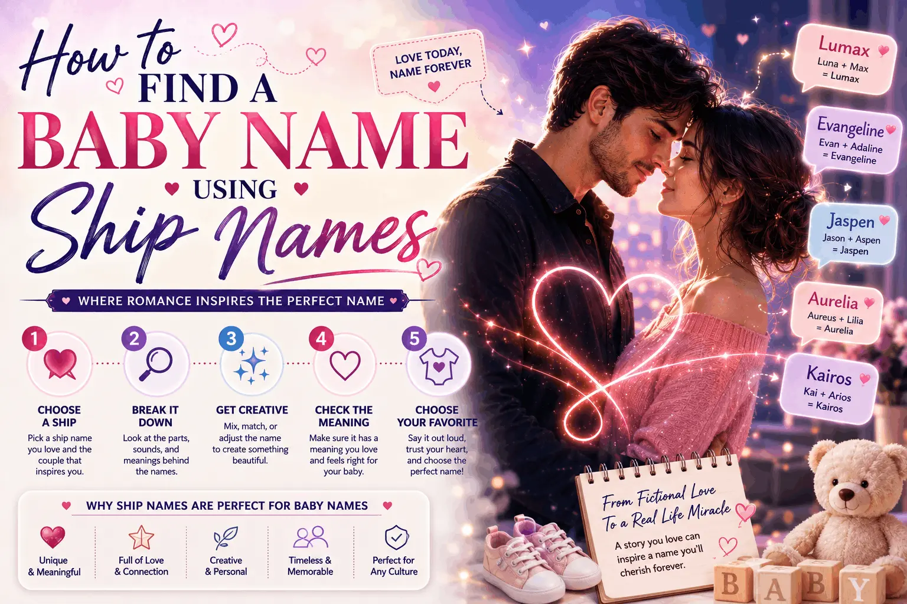

How to Find a Baby Name Using Ship Names
Blending two names is one of the oldest tricks for landing a name that feels brand new and deeply personal at the same time. Here is how to do it well.

Choosing a baby name can feel like searching for a single perfect word in a language of thousands. Family lists get vetoed, popular charts feel overused, and the truly unusual options often sound invented for the sake of it. There is a quieter method that parents have used for generations without giving it a name: blending. Take two meaningful names, mix their sounds, and you often arrive at something that feels familiar and fresh at once. This guide shows you how to turn that instinct into a repeatable process, and how a ship name generator can do the mechanical part for you in seconds.
Why blending works so well for baby names
Real baby names are not random. They follow patterns your ear already recognizes: soft consonants, balanced vowels, familiar endings like "-a," "-el," "-ia," or "-en." When you blend two names you love, you are working with sounds that already fit those patterns, so the results tend to land in "real name" territory rather than sounding made up. That is the secret. You are not inventing from nothing; you are recombining pieces that already belong to the naming tradition.
Blending is also personal in a way a name chart can never be. A name built from both parents' names, or from two grandparents, or from a couple's own names, carries a small story. Years later you can tell your child exactly where their name came from, and that origin is theirs alone.
Where the source names can come from
The "two names" you blend do not have to be the parents. Some of the most meaningful baby names come from unexpected pairs.
- Both parents. The classic route. Mixing your two names creates a name that literally comes from both of you.
- Two grandparents. A lovely way to honor family on both sides without picking a favorite.
- A parent and a place. Blend a name with a meaningful location for a subtle, layered result.
- Two names you simply love. If you and your partner each have a favorite you cannot agree on, blending them can end the standoff with something you both helped choose.
The method, step by step
Blending for baby names has one important difference from blending for a couple nickname: the result has to work as a real, standalone name a child will carry for life. That raises the bar. Here is how to keep the quality high.
1. Split each name into sounds, not letters
Think in syllables. "Maria" is "Ma-ri-a." "Daniel" is "Dan-iel." Working with these natural sound chunks, rather than individual letters, is what keeps a blend pronounceable and name-like. Letter-by-letter mashing is how you end up with something unusable.
2. Try both orders
Maria and Daniel can lead in either direction: "Mariel," "Daria," "Maniel," "Danira." The order changes the feel completely, and one direction almost always sounds better than the other. Generate both and compare.
3. Favor real-sounding endings
Endings do a lot of quiet work. Names ending in "-a," "-ia," "-el," "-en," "-ah," and "-ana" read instantly as names. If your blend lands on an awkward ending, gently reshape it toward one of these. "Danira" feels like a name; the raw splice it came from might not have.
4. Say it with the surname
A name never lives alone. Say your favorite candidates out loud with your last name, and with a plausible middle name. Listen for rhythm and for any accidental rhyme or tongue-twister. A name that sings on its own can stumble when the full string is spoken.
5. Do the practical checks
Once you have a shortlist, run the real-world tests. What are the initials? Is there an obvious nickname, and do you like it? How is it likely to be spelled and mispronounced by teachers and strangers? None of these should necessarily veto a name you love, but you want no surprises.
Pitfalls to avoid
Blending is powerful, but a few habits produce names that look clever on paper and cause headaches in real life.
- Chasing uniqueness at the cost of sense. A name so unusual that no one can spell or say it becomes a lifelong chore for your child. Aim for fresh, not baffling.
- Overloading with letters. Adding extra silent letters to make a name look distinctive usually just makes it harder. The cleanest spelling is almost always the best.
- Ignoring meaning collisions. Check that your blend does not accidentally match a word or brand in your language or a language close to home.
- Deciding alone. If two people are raising the child, both should sit with the shortlist. A name is easier to love when you both chose it.
Let a tool do the heavy lifting
Splitting names into syllables, trying both orders, and reshaping endings by hand is slow and easy to get wrong. This is where a ship name generator earns its keep. Enter the two source names, choose the Baby Name Inspiration purpose, and it produces a batch of blends that are already filtered for pronounceability and nudged toward real-name endings. Instead of staring at a blank page, you start from a page full of promising candidates.
Because the tool understands syllables and common name patterns, its suggestions tend to sit right in that sweet spot: familiar enough to feel like a real name, fresh enough that you have not heard it on every playground. Generate a set, cross out the ones that miss, and keep the two or three that make you pause. Then take those into the real-world checks above.
From idea to shortlist
The path is simple once you see it: pick your two meaningful names, generate a batch of blends, say the best ones aloud with your surname, and run your shortlist through the practical tests. What you are really doing is borrowing sounds that already work and recombining them into something that belongs only to your family. It is creative, it is personal, and it sidesteps the exhausted popularity charts entirely.
The name you land on might be a small tweak of a splice you almost skipped, that is normal. Treat the generated list as raw material, trust your ear, and give the finalists a few days to settle before you decide. A great baby name rarely announces itself instantly; more often it quietly refuses to leave your head.
Keep reading
Choosing a Couple Social Media Handle
Land a shared username that is memorable, available, and easy to say.
CouplesCreating a Romantic Couple Ship Name
Turn two names into a pet name that actually sounds sweet.
Baby NamesBaby Names Inspired by Couple Ship Names
Famous couple blends that double as real baby names.